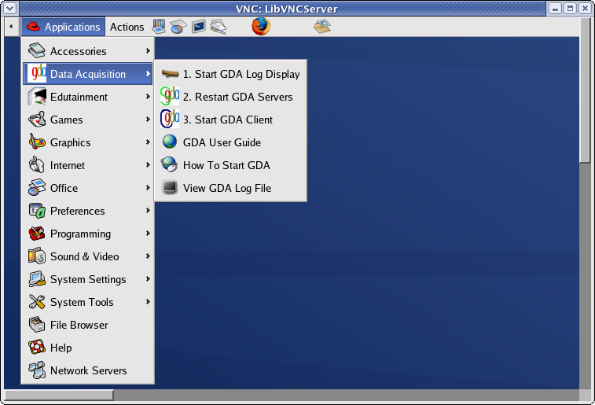
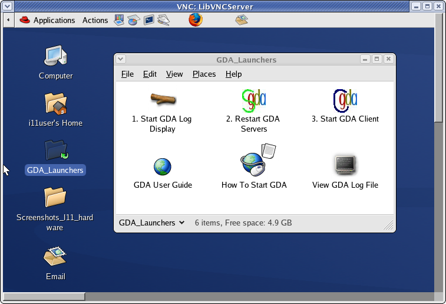

Change Logs:
2. Updated 10 Nov 2008 by Fajin Yuan
1. Update 8 Oct 2008 by Fajin Yuan at request of PBS Chiu Tang
Starting GDA
GDA could be started from
- Application menu under Data Acquisition sub-menu,

- Desktop GDA_Launchers folder,

- command line in a terminal
- GDA_StartlogPanel
- GDA_RemoteStart_Lin
- GDA_StartClient
Whichever way you start GDA you must follow the following order:
- Starting GDA log display - to be informed of GDA servers progress;
- Starting or restarting GDA servers (only for the first time you start GDA) - wait until the "Server initialisation complete"
- Starting GDA client - login as yourself if you want to be able to access data you collected into your permitted directory.
Important Notes
- Normally you do NOT need to restart GDA servers every time you start GDA Client.
- If you stop the GUI then you do NOT have to restart the Server. Stopping the GUI does not stop the GDA server.
- The servers support multiple Clients from the same or different PCs.
Explaination of Icons and commands
- "Start GDA Log Display" ( or command "GDA_StartlogPanel" ) - Opens the LogPanel that displays the messages from the different GDA processes.
- "View GDA Log File" on a console ( or "command GDA_ShowLogFile" ) - displays the console log file from the backend processes, may give you more debug information.
- "Restart GDA Server" ( or command "GDA_RemoteStart_Lin" ) - restarts the remote backend processes. This will trigger start servers processes on remote server machine.
The expected output of this command is:
nohup: appending output to `nohup.out'
Connection to i11-control.diamond.ac.uk closed.
- "Start GDA Client" ( or command "GDA_StartClient" ) - start the GDA client. This can only be done once the background servers have started fully.
A restart of the GDA servers will take about 3 minutes. The end is signalled by the message:
INFO gda.util.ObjectServer - Server initialisation complete. xmlFile = /dls/i11/software/gda/config/xml/i11_server.xml
in either the LogPanel or console log file.
Additional Help available
- There is an online GDA user guide available through GDA Menu or from 'help' menu within GDA client.
- You will also be given an I11 specific manual for commands available to carry out your experiments.
Known Possible Issues
- If you restart GDA servers accidentally before closing a GDA client, this client may become un-responsive to control commands although you can still see up-to-date logs from servers.
In this situation you need to close this client by using "killall java" on the client-running PC, and restart GDA client again after that.
- The Robot arm and "robotscan" will not run when and if any of the Experiment Hutch doors is open, or not latched properly. This is an safety requirement, cannot be altered.
- If connection problem occurs between Servers and Clients during operation, or some hardware devices changed, you may need to restart GDA servers before restart GDA client again.
- It is noticed that DCM "energy" parameter sometime becomes sticky (Lookup its EDM screen), please report this to beamline staffs who will help you to recover its control.